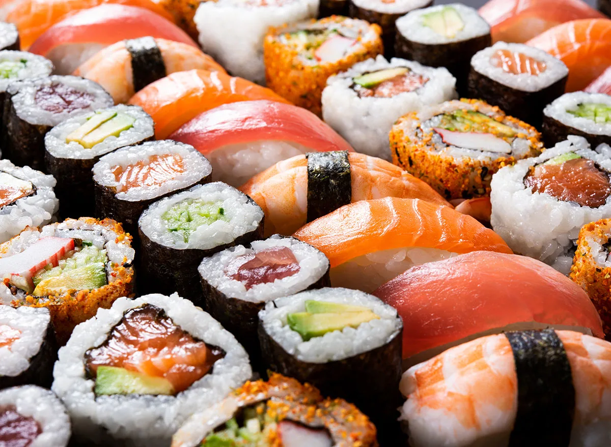

Chris Thibodeau
25yr old guy who has been going to post secondary school for FAR too long.
I have several years exp in coding from Uoc, but haven't
graduated their 4yr cpsc program in over 6yrs
cause their set up is
!
In my free time im either playing the game i am addicted to at the time
or watching youtube videos / twitch streams.
That being said i dont know HOW much free time i will be having as i have a VERY full course load...
| Course Number | Course name | Course Time |
|---|---|---|
| DES2301 | User Experince Design | Any-Time Online |
| MATH1901 | Math for the Computer Industry | Tu,Th 11:00am - 12:30pm |
| SODV1101 | Programming Fundamentals | M, W 3:30pm - 5:00pm |
| TECH1101 | Web and Internet Fundamentals | M 6:00pm - 9:00pm |
| TECH1102 | Internet of Things | Tu, Th 12:30pm - 2:00pm |
My Favourite Things:
- Video Games (PC mostly)
- Sushi 
-
Coding